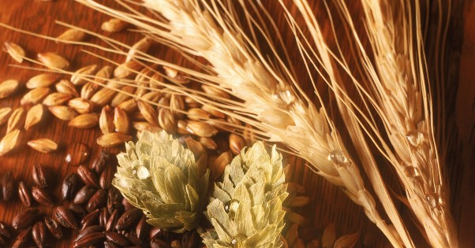
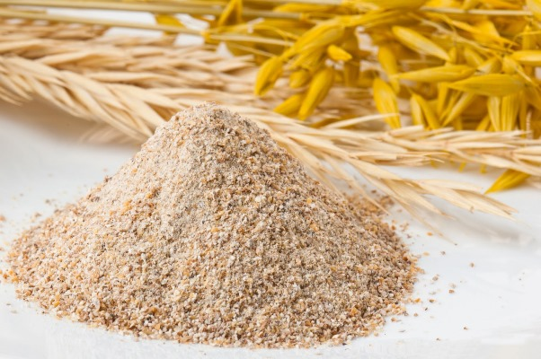
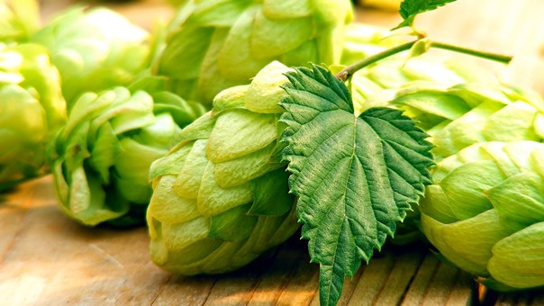

За тысячелетия существования пива человечество придумало множество его рецептов. Но по сей день, несмотря на огромное количество разнообразных сортов, в своем классическом варианте пиво – один из самых простых напитков. В его составе всего четыре главных компонента – солод, дрожжи, хмель и вода.
Ингредиенты пива
Солод
Солод, пригодный для пивоварения, обычно делается из пророщенного ячменя. Иногда его могут смешивать с пшеничным солодом – в зависимости от сорта пива. Сначала ячменные зерна следует вымочить и дать прорасти. После этого их нужно высушить. Так получается базовый тип солода, пригодный для изготовления светлого пива. А чтобы получилось темное, солод надо обжарить. Цвет, запах и вкус определяются степенью обжарки. При последней стадии обжарки добиваются придания напитку черного цвета, в котором будут прослеживаться кофейные нотки. Такое пиво может иметь шоколадный привкус.
Дрожжи
Алкогольные напитки получаются благодаря процессу брожения. А сам он является результатом деятельности одноклеточных грибов – дрожжей. Они перерабатывают имеющийся в солоде сахар в спирт. А также насыщают напиток углекислым газом и другими веществами. Вкус пива может быть самым разным, но зависит он во многом именно от дрожжей.

Хмель
Мнение, что хмель и делает пиво алкогольным напитком, ошибочно. Это растение просто придает ему характерный вкус. Чем дольше варится хмель, тем более горьким выйдет пиво. Обычно процесс варки происходит не более 1,5 часа. Варка нужна для того, чтобы содержащиеся в зернах хмеля смолы могли раствориться. В наши дни открыто много видов хмеля, например, американский и бельгийский. Каждая разновидность способна придать пиву уникальный аромат и вкус. Вместо хмеля изредка используют и некоторые травы, но только он в силах обеспечить пиву долгий срок хранения.

Процесс изготовления пива
 Изготовление пива начинается с того, что базовый солод смешивают с солодами, имеющими необходимую прожарку. Так получают солодовую засыпь. Далее зерна надо раздробить и залить горячей водой, чтобы получилась смесь под названием затор. Полученную смесь настаивают при определенных температурах, чтобы имеющиеся в солоде ферменты могли выработать простые сахара. Именно они и будут затем питать дрожжи. На данном этапе еще не производятся ни варка, ни кипячение.
Изготовление пива начинается с того, что базовый солод смешивают с солодами, имеющими необходимую прожарку. Так получают солодовую засыпь. Далее зерна надо раздробить и залить горячей водой, чтобы получилась смесь под названием затор. Полученную смесь настаивают при определенных температурах, чтобы имеющиеся в солоде ферменты могли выработать простые сахара. Именно они и будут затем питать дрожжи. На данном этапе еще не производятся ни варка, ни кипячение.
Следующий этап – фильтрация. Полученную жидкость нужно отделить от зерен. Сусло отправляется в варочный чан, причем для этого используется насос. И уже в чане его кипятят. Продолжительность варки определяют исходя из того, какого сорта готовится пиво. Светлые сорта традиционно кипятят меньше, а темные – дольше. После закипания в сусло добавляют хмель. Если это предполагается используемой рецептурой, его добавляют не единожды. Чем больше – тем более насыщенными получатся аромат и вкус.
Еще одна функция варки – стерилизация. Прежде чем будут добавлены дрожжи, сусло должно быть продезинфицировано. Когда варка окончена, полученный напиток отделяют от примесей. Для этого его перекачивают в специальный сосуд, который называют гидроциклон или вирпул. В нем пиво благодаря насосу разгоняется и получается воронка – в ней и скапливается ненужная взвесь.
Следующий шаг – охлаждение пива. Только после этого в него можно будет добавить дрожжи и запустить главный процесс – брожение. Как долго оно будет происходить, тоже зависит от сорта пива. Брожение может осуществляться как при низких (низовое), так и при высоких (верховое) температурах. Для разных видов брожения применяют разные дрожжи.
Для низового – лагерные. Данным путем изготавливают самое обычное пиво, которое можно найти в любом магазине. Верховое брожение происходит с участием элевых дрожжей. Подобное пиво имеет богатый аромат и насыщенный вкус. Это т.н. крафтовое пиво, которое варят на небольших частных производствах и домашних пивоварнях.
По желанию к напитку можно добавить различные дополнительные ингредиенты, которые придадут ему тот или иной вкус. Их включение может происходить почти на любой стадии изготовления: при варке, брожении или даже позже. И, наконец, завершается все процессом выдержки пива, когда оно созревает. Темные сорта, а также крепкое пиво выдерживают